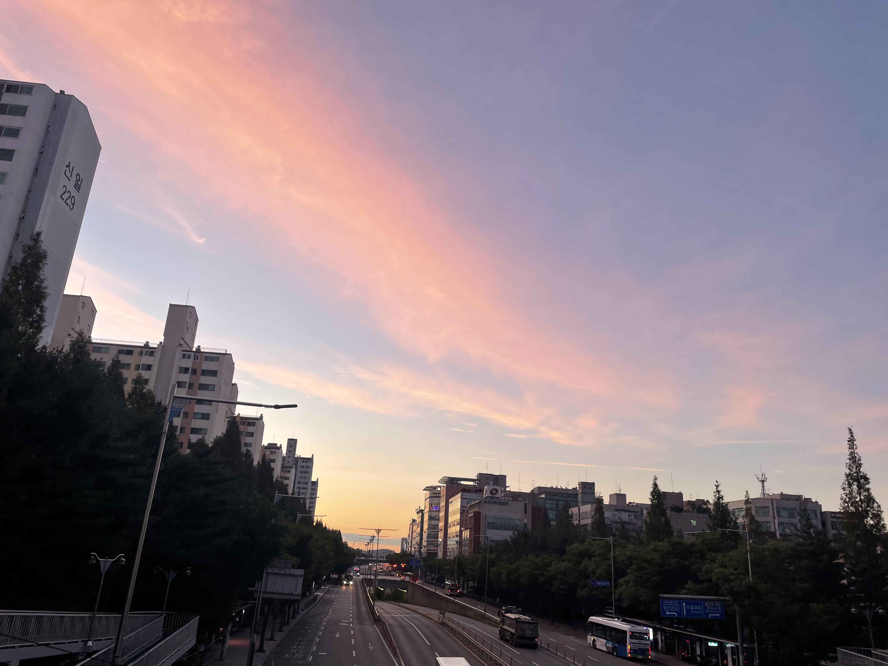
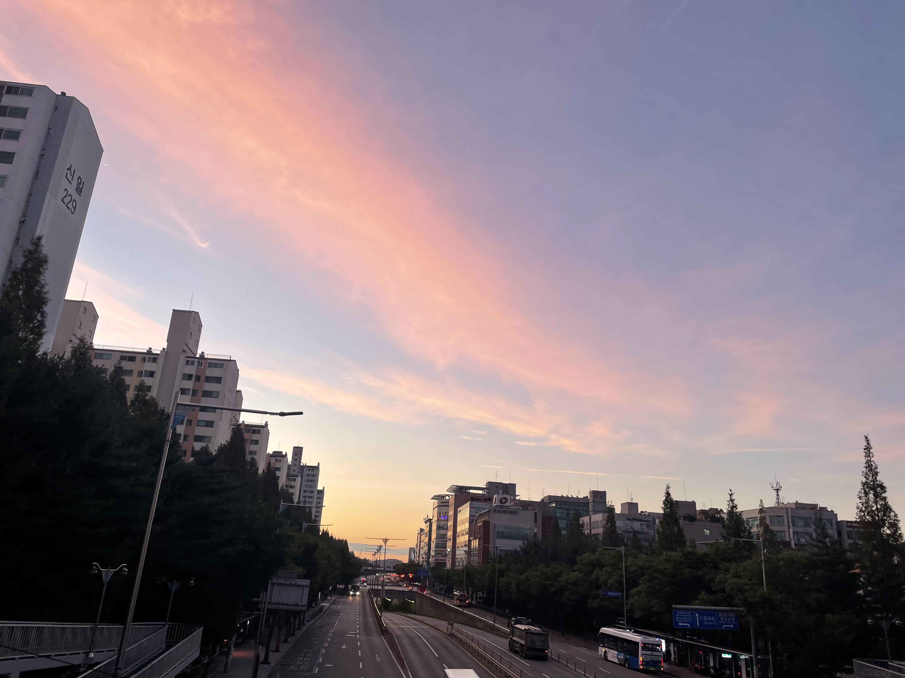
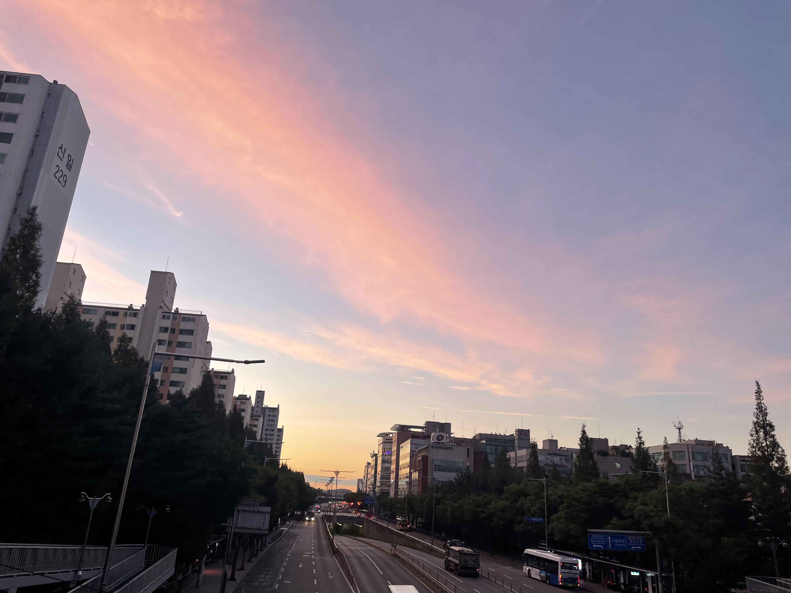

내가 좋아하는 하늘


 


안녕하세요, 저는 후회없는 삶을 살고 싶은 메이토에요. 한 번 뿐인 삶, 제가 원하는 건 그 끝이 실패라고 하더라도 꼭 도전하고 싶고, 개발도 그 도전 중 하나입니다. 저는 혼자 하는 일도 좋아하지만 사람들과 함께 하는 일을 더 좋아해요🥰 우테코에 와서도 많은 사람들과 즐겁게 지내고 싶어서 말을 먼저 걸거나, 인사를 먼저 하는 경우가 많답니다. 개발자가 되었을 때도 이런 사람들과의 관계 유지, 소통에 있어서 제 강점을 살리고 싶어요!


『세상 모든 노랑』은 정말 감동적이고 깊은 의미를 가진 작품이다. 이 소설은 색각 이상을 가진 주인공 ‘영’과 노란색을 주관하는 신 ‘랑’의 사랑 이야기를 그리면서, 사랑의 본질을 탐구하는 독특한 설정을 가지고 있다. ‘영’은 디자인을 전공하고 있지만 노란색을 볼 수 없는 색각 이상을 가진 인물인데, 그로 인해 세상의 가장 밝고 따뜻한 색을 경험할 수 없다는 아픔을 안고 살아갔다. 그러나 ‘랑’은 그에게 노란색을 선물하는 존재로 등장했다. ‘랑’은 단순히 노란색을 나타내는 신이 아니라, 그 자체로 영의 세계에 색을 입히는 존재가 되었다. 이 두 사람은 각자 다른 세상에서 살아가지만, 서로에게 결핍된 부분을 채워주는 관계를 형성했다. ‘영’은 ‘랑’의 존재를 통해, 자신이 결코 볼 수 없었던 색을 이해하게 되었고, ‘랑’은 ‘영’의 부족함을 알면서도 그의 세상에 색을 입히려는 노력을 아끼지 않았다. 이들의 사랑은 결국 이별로 끝났지만, 그 이별 속에서도 사랑은 결코 무의미하지 않음을 깨닫게 해주었다.
이별은 단순한 끝이 아니라, 각자가 서로에게 얼마나 중요한 존재였는지를 더 깊게 이해하는 순간이 되었다. 사랑이란 단순히 서로에게 감정을 나누는 것이 아니라, 서로의 결핍을 채워주고, 그 결핍이 사랑을 통해 의미를 찾게 되는 과정이라는 점에서 이 작품은 나에게 큰 울림을 주었다. ‘영’과 ‘랑’은 서로에게 없었던 것을 채워주며, 사랑이란 단순히 존재를 공유하는 것이 아니라, 상대방의 세상에 자신을 투영하고, 그 사람의 결핍을 이해하며 완전한 사랑을 만들어가는 것임을 보여주었다. 이 소설을 통해 나는 사랑이 무엇인지에 대해 다시 한 번 생각하게 되었다. 사랑은 상호적인 이해와 결합을 통해 서로를 더 나은 사람으로 만들어가는 과정이라는 생각이 들었다.

구와 담의 사랑 이야기로 사랑하는 연인의 갑작스러운 죽음을 다룬 책이다. '만약 네가 먼저 죽는다면 나는 너를 먹을거야. 그래야 너 없이도 죽지 않고 살 수 있어.' 이 대사는 단순한 사랑의 고백이 아니라, 그만큼 구를 잃는 것이 담에게 얼마나 치명적이고 받아들일 수 없는 일이었는지를 보여주는 상징적 표현이다. 담은 구와의 관계에서 그가 의지할 수 있는 유일한 존재였으며, 그 관계의 끊어짐이 곧 자신도 끝을 맞이하는 것처럼 느껴졌을 것이다. 그래서 그는 구의 죽음을 받아들이기 위해, 비정상적이고 병적인 방식으로 그를 계속해서 자신의 일부로 유지하려는 극단적인 선택을 하게 된다. 구의 시체를 먹는 장면은 매우 잔인하고 충격적일 수 있지만, 그 안에는 담의 절박한 심정과 구와의 관계가 그에게 얼마나 중요한 존재였는지를 잘 보여준다. 담의 행동은 외부에서 보면 이해할 수 없고 심지어 미친 행동으로 비춰질 수 있다. 그러나 그가 그렇게까지 갈 수밖에 없었던 이유는, 구와의 사랑이 그만큼 깊고 강렬했기 때문이다. 담에게 구는 단순한 연인이 아닌, 그의 삶의 전부였으며, 구의 죽음은 그가 존재할 이유를 잃는 것이었기 때문이다. 이 이야기는 사랑이 때로는 얼마나 병적이고, 극단적인 형태로 나타날 수 있는지, 그리고 사랑이란 감정이 얼마나 강렬하게 사람의 삶을 지배할 수 있는지에 대해 묻는 작품이 된다.